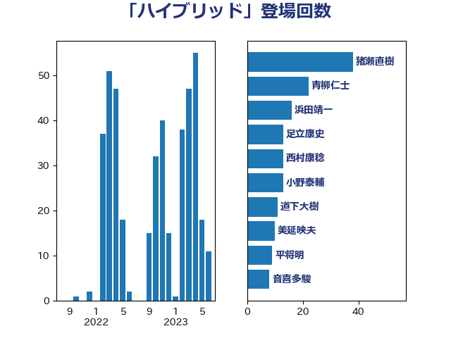

単語「ハイブリッド」

| 猪瀬直樹 | 日本維新の会 | 38 回 |
| 青柳仁士 | 日本維新の会 | 22 回 |
| 浜田靖一 | 自由民主党 | 16 回 |
| 足立康史 | 日本維新の会 | 13 回 |
| 西村康稔 | 自由民主党 | 13 回 |
| 小野泰輔 | 日本維新の会 | 13 回 |
| 道下大樹 | 立憲民主党 | 11 回 |
| 美延映夫 | 日本維新の会 | 10 回 |
| 平将明 | 自由民主党 | 9 回 |
| 音喜多駿 | 日本維新の会 | 8 回 |
| 落合貴之 | 立憲民主党 | 8 回 |
| 萩生田光一 | 自由民主党 | 8 回 |
| 石井苗子 | 日本維新の会 | 7 回 |
| 岸田文雄 | 自由民主党 | 7 回 |
| 堀場幸子 | 日本維新の会 | 6 回 |
| 清水貴之 | 日本維新の会 | 5 回 |
| 佐藤正久 | 自由民主党 | 5 回 |
| 今枝宗一郎 | 自由民主党 | 5 回 |
| 荒井優 | 立憲民主党 | 4 回 |
| 漆間譲司 | 日本維新の会 | 4 回 |
| 渡辺周 | 立憲民主党 | 4 回 |
| 小熊慎司 | 立憲民主党 | 4 回 |
| 鬼木誠 | 立憲民主党 | 3 回 |
| 鈴木義弘 | 国民民主党 | 3 回 |
| 福田昭夫 | 立憲民主党 | 3 回 |
| 礒崎哲史 | 国民民主党 | 3 回 |
| 末松義規 | 立憲民主党 | 3 回 |
| 山口壯 | 自由民主党 | 3 回 |
| 小林鷹之 | 自由民主党 | 3 回 |
| 安江伸夫 | 公明党 | 3 回 |
| 和田有一朗 | 日本維新の会 | 3 回 |
| 吉田宣弘 | 公明党 | 3 回 |
| 高木宏壽 | 自由民主党 | 2 回 |
| 鎌田さゆり | 立憲民主党 | 2 回 |
| 重徳和彦 | 立憲民主党 | 2 回 |
| 遠藤良太 | 日本維新の会 | 2 回 |
| 西村明宏 | 自由民主党 | 2 回 |
| 舩後靖彦 | れいわ新選組 | 2 回 |
| 片山大介 | 日本維新の会 | 2 回 |
| 柴田巧 | 日本維新の会 | 2 回 |
| 末松信介 | 自由民主党 | 2 回 |
| 掘井健智 | 日本維新の会 | 2 回 |
| 山際大志郎 | 自由民主党 | 2 回 |
| 山本左近 | 自由民主党 | 2 回 |
| 仁木博文 | 無所属 | 2 回 |
| 高木かおり | 日本維新の会 | 1 回 |
| 阿達雅志 | 自由民主党 | 1 回 |
| 長島昭久 | 自由民主党 | 1 回 |
| 鈴木英敬 | 自由民主党 | 1 回 |
| 谷合正明 | 公明党 | 1 回 |
| 福山哲郎 | 立憲民主党 | 1 回 |
| 石井拓 | 自由民主党 | 1 回 |
| 矢倉克夫 | 公明党 | 1 回 |
| 熊谷裕人 | 立憲民主党 | 1 回 |
| 湯原俊二 | 立憲民主党 | 1 回 |
| 浅野哲 | 国民民主党 | 1 回 |
| 浅田均 | 日本維新の会 | 1 回 |
| 水岡俊一 | 立憲民主党 | 1 回 |
| 森田俊和 | 立憲民主党 | 1 回 |
| 梅村みずほ | 日本維新の会 | 1 回 |
| 林芳正 | 自由民主党 | 1 回 |
| 松野博一 | 自由民主党 | 1 回 |
| 松本剛明 | 自由民主党 | 1 回 |
| 杉本和巳 | 日本維新の会 | 1 回 |
| 木村次郎 | 自由民主党 | 1 回 |
| 朝日健太郎 | 自由民主党 | 1 回 |
| 日下正喜 | 公明党 | 1 回 |
| 新妻秀規 | 公明党 | 1 回 |
| 斉藤鉄夫 | 公明党 | 1 回 |
| 岩谷良平 | 日本維新の会 | 1 回 |
| 山谷えり子 | 自由民主党 | 1 回 |
| 山本博司 | 公明党 | 1 回 |
| 小野寺五典 | 自由民主党 | 1 回 |
| 宮路拓馬 | 自由民主党 | 1 回 |
| 宮崎政久 | 自由民主党 | 1 回 |
| 宮口治子 | 立憲民主党 | 1 回 |
| 太田房江 | 自由民主党 | 1 回 |
| 太栄志 | 立憲民主党 | 1 回 |
| 大塚拓 | 自由民主党 | 1 回 |
| 塩田博昭 | 公明党 | 1 回 |
| 和田政宗 | 自由民主党 | 1 回 |
| 北神圭朗 | 無所属 | 1 回 |
| 住吉寛紀 | 日本維新の会 | 1 回 |
| 伊藤孝恵 | 国民民主党 | 1 回 |
| 伊波洋一 | 無所属 | 1 回 |
| 中西祐介 | 自由民主党 | 1 回 |
| 上田英俊 | 自由民主党 | 1 回 |